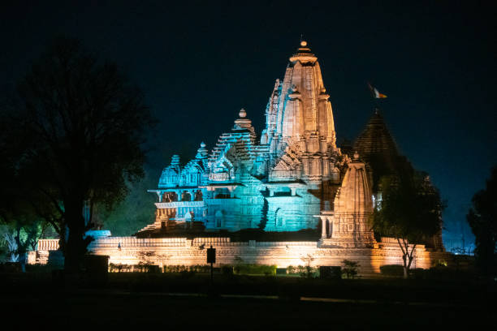
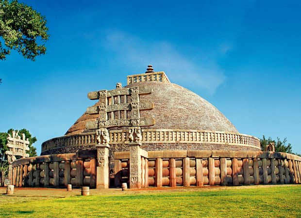
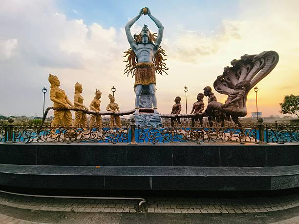
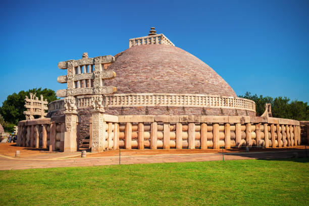
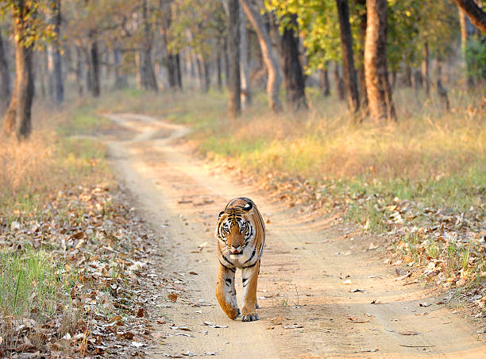
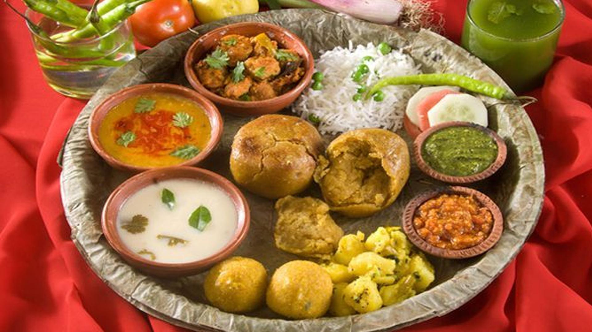

01
Khajuraho
UNESCO World Heritage temple complex built by the Chandela dynasty, famous for stunning Nagara architecture and intricate sculptures.

Discover the heart of India — home to world-renowned UNESCO erotic temples, sacred Jyotirlingas, dense tiger reserves, royal palace forts, and timeless tribal art.
Explore Madhya Pradesh ↓Madhya Pradesh represents the geographical and spiritual nucleus of India, boasting three UNESCO World Heritage Sites, India's largest forest cover, and legendary tiger populations.
From the intricate sandstone carvings of Khajuraho and the sacred Bhasma Aarti of Ujjain to the regal lakes of Bhopal and the lush Satpura hills of Pachmarhi, Madhya Pradesh presents a classic tapestry of Indian civilization.
Celebrated heritage temples, sacred cities, and scenic hill resorts across Madhya Pradesh.

UNESCO World Heritage temple complex built by the Chandela dynasty, famous for stunning Nagara architecture and intricate sculptures.

Ancient spiritual city on the banks of Shipra River, home to the sacred Mahakaleshwar Jyotirlinga and host of the grand Kumbh Mela (Simhastha).

City of Lakes — celebrated for grand mosques like Taj-ul-Masjid, peaceful Upper Lake, Bharat Bhavan arts center, and nearby Sanchi Stupa.

Queen of Satpura — Madhya Pradesh's sole hill station, famous for Bee Falls, ancient Pandava Caves, Dhoopgarh sunset point, and pine groves.
Central Indian cuisine balances aromatic Malwa street food delicacies, rich Mughlai curries of Bhopal, and wholesome grain-based staple preparations.

Intricate indigenous dot-and-line paintings on canvases, terracotta clay murals, and brass Dhokra metal crafts.
Ancient Buddhist rock monuments of Sanchi, Bhimbetka prehistoric rock shelters, and sacred Narmada river ghats in Maheshwar.
Rich musical lineage of Gwalior Gharana and Maihar, celebrated annually through the prestigious Tansen Music Festival in Gwalior.
Delicate handwoven Chanderi silk-cotton sarees and royal Maheshwari geometric borders patronized by Queen Ahilyabai Holkar.
Discover all 28 states, local food specialties, and centuries of living traditions.
← Back to All States